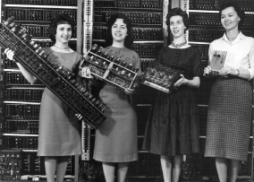
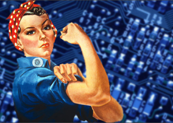

- Desafios da mulher em Tech
-
Quais são os desafios das mulheres na careira de tecnologia.

- Mulheres Inspiradoras
-
Mulheres importantes para o desenvolvimento da tecnologia.
- Cursos/Vagas para mulheres em Tech
-
Oportunidades de cursos e vagas de tecnologia para mulheres.

- História da mulher na tecnologia
-
A situação da mulher dentro da área de tecnologia e os principais problemas e estigmas.